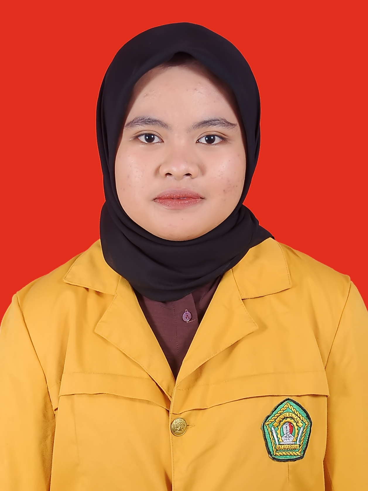

| Nama | : Nabila Aulia Azzahra |  | |||
| NIM | : 2109116111 | ||||
| Cita-cita | : Kaya Raya dan Bahagia | ||||
| Hobi |
|
||||
| Klik link ini, ok | |||||
| No | Jadwal | ||||
| Mata Kuliah | Hari | Waktu | Ruangan | Dosen | |
| 1. | Pemrograman Berorientasi Objek | Senin | 09.30 - 11.00 | C309 | Putut Pamilih Widagdo, S. Kom., M. Kom |
| 2. | Jaringan Komputer | Selasa | 08.30 - 10.10 | D302 | Hario Jati Setyadi, M. Kom |
| 3. | Desain UI/UX | Rabu | 10.30 - 12.00 | D401 | Hario Jati Setyadi, M. Kom |
| 4. | Pengantar Bisnis | Kamis | 07.30 - 09.00 | C402 | Septya Maharani, M. Kom |
| 5. | Manajemen Resiko TI | Jumat | 08.30 - 09.45 | C303 | Muhammad Labib Jundillah, M. Kom |